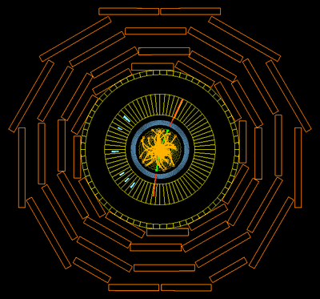

| The decay of a Z to two tau particles can be sometimes hard to distinguish from other Z decays. Two taus decaying always include the prescence of neutrinos (which are not detectable) in addition to combinations of electrons, muons, and jets (for example, two electrons, two muons, one electron and a jet, etc.). These therefore can often look in the event display like other Z decay channels seen in this exercise. | |||||||||
|  | |||||||||
| |||||||||